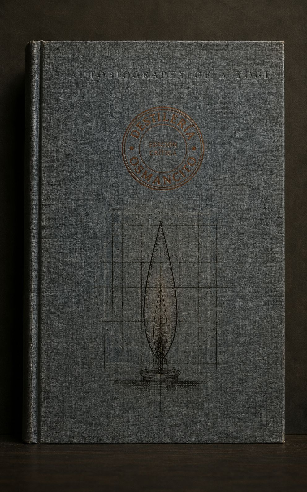
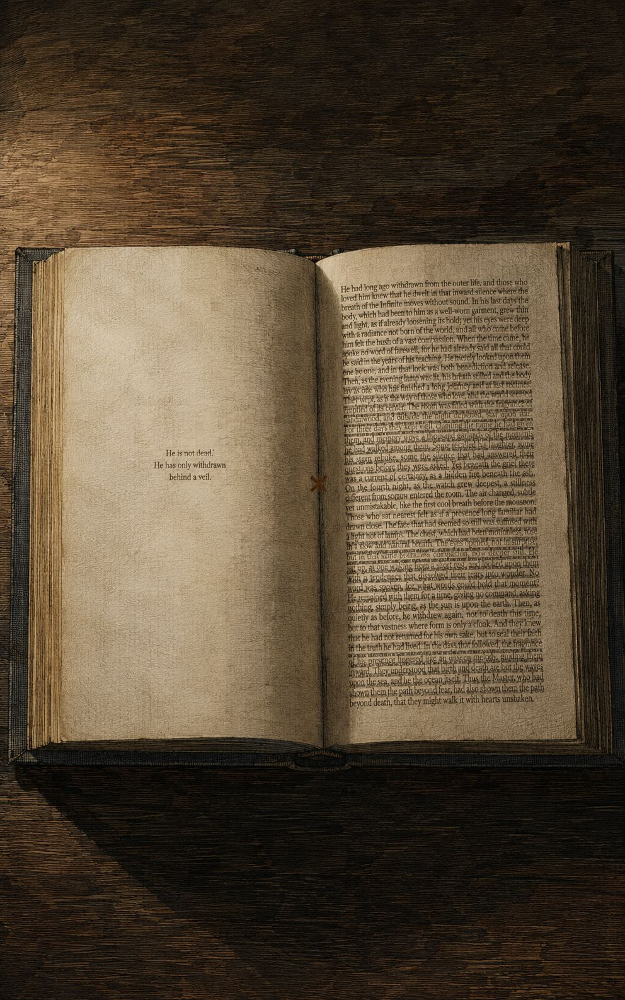
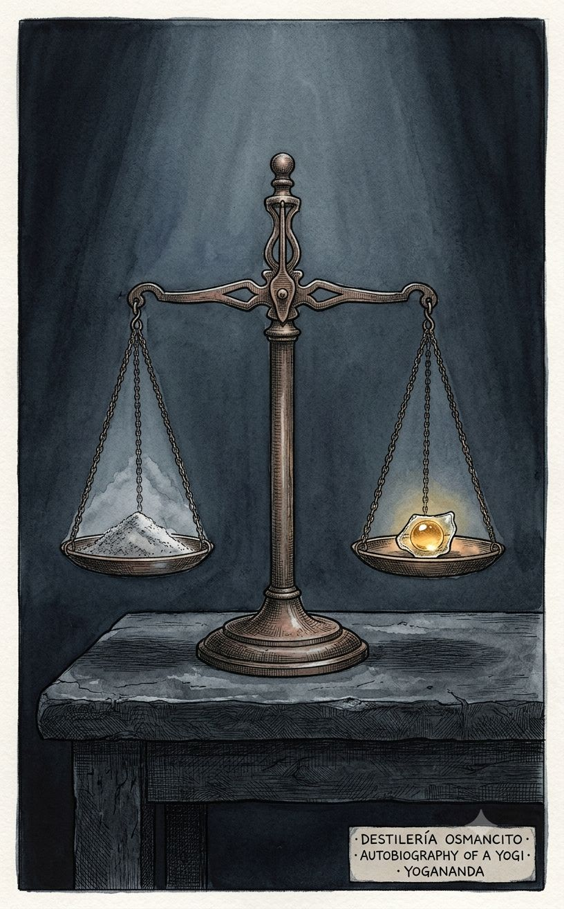
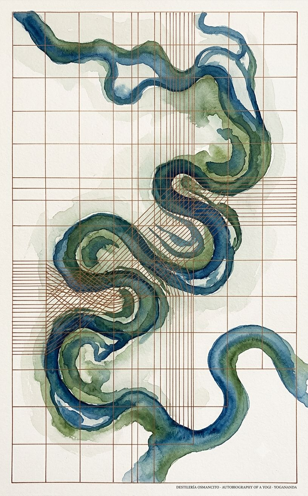

Un libro que se presenta como memoria personal es, en el fondo, un registro de sucesión: la transmisión de un poder de maestro a discípulo a través de cuatro generaciones (Babaji, Lahiri Mahasaya, Sri Yukteswar, Yogananda), donde cada milagro individual importa menos que el hecho de que el linaje no se rompa. La palabra más repetida del texto no es “Dios” sino “maestro” — y esa asimetría, sostenida durante más de quinientas páginas, dice del libro algo que su título no dice: no es la autobiografía de un yogui, es la biografía de una obediencia.
Llega pesado y ancho, con la solidez casi arquitectónica de un texto que se sabe consultado más que leído, la cubierta lisa de una edición que no necesita ilustración porque su autoridad es interna.
Este no es un corpus que se defienda. Llega ya convencido, con la cadencia de quien relata hechos y no opiniones, y esa certeza —sostenida capítulo tras capítulo sin fisura visible— es en sí misma información antes de que se lea una sola frase. Nombrar qué es este corpus no es resumir lo que cuenta: es reconocer que se presenta como testimonio, no como narración, y que toda lectura posterior deberá decidir qué hacer con esa pretensión.
Título — Autobiography of a Yogi (Reprint of Original 1946 Edition) Autor — Paramhansa Yogananda Año — 1946 Género — Autobiografía espiritual / testimonio religioso Extensión estimada — 141.563 palabras (cuerpo narrativo, capítulos 1–48), aproximadamente 566 páginas a 250 palabras por página, 48 capítulos Idioma original — Inglés Palabra más frecuente con contenido — “Master” (459 apariciones). No coincide con lo que el título declara ser —una autobiografía, centrada en un “yo”— sino con su verdadero centro de gravedad: la relación de discipulado. El corpus se declara memoria de una vida; la frecuencia léxica expone que es, ante todo, memoria de un vínculo de obediencia y amor hacia una figura de autoridad.
Un niño bengalí de familia devota busca desde la infancia a su gurú predestinado, lo encuentra en la juventud en la figura de Sri Yukteswar, y bajo su tutela atraviesa una sucesión de encuentros con santos y prodigios —materializaciones, curaciones, bilocaciones, resurrección— que documenta como testigo directo o como receptor de testimonios de segunda mano. El libro traza un linaje espiritual de cuatro generaciones que desemboca en la misión del propio narrador de llevar el Kriya Yoga a Occidente, y culmina con la fundación de una organización religiosa en Estados Unidos. La muerte y posterior aparición corpórea de Sri Yukteswar constituye el centro afectivo y doctrinal de la obra.
Paramhansa Yogananda (Mukunda Lal Ghosh) — narrador y protagonista; discípulo, luego maestro él mismo, fundador de la Self-Realization Fellowship. Sri Yukteswar Giri — gurú directo del narrador; figura central del vínculo afectivo del libro. Lahiri Mahasaya — maestro de Sri Yukteswar; su vida se narra en capítulo dedicado y comparada con la de Jesucristo. Babaji — maestro de Lahiri Mahasaya; figura semilegendaria, origen declarado del linaje y de la técnica de Kriya Yoga. Bhagabati Charan Ghosh — padre del narrador, funcionario ferroviario y discípulo de Lahiri Mahasaya. Mahatma Gandhi — figura pública visitada por el narrador; ocasión de un ensayo sobre no-violencia. Luther Burbank y Therese Neumann — figuras occidentales (científico y mística católica) visitadas como contraparte no india de los fenómenos narrados. Ananda Moyi Ma y Giri Bala — las dos santas mujeres centrales del libro.
El corpus se abre con una declaración de método poco común en una autobiografía: el narrador afirma recordar su propia infancia preverbal como evidencia de vidas anteriores, estableciendo desde la primera página que la memoria personal es también memoria kármica. Nace en una familia bengalí donde ambos padres son discípulos de Lahiri Mahasaya, maestro de Benarés cuya sombra cubre el libro entero aunque muere antes de que el narrador pueda conocerlo en carne. La madre muere en la infancia del narrador tras confiarle un amuleto cuya desaparición, profetizada entonces, se cumple años después en un ashram — el primer ejemplo de una estructura que se repetirá: la profecía formulada temprano y saldada mucho después, casi como firma del propio texto.
Antes de encontrar a su maestro definitivo, el narrador atraviesa una serie de encuentros con santos secundarios —el “santo de los dos cuerpos”, el “santo del perfume”, el “swami tigre”, el científico J. C. Bose— que funcionan como aprendizaje disperso y como catálogo de los tipos de prodigio que el libro documentará después con mayor sistema. Un intento de fuga hacia el Himalaya, motivado por el deseo de alcanzar la iluminación sin mediación familiar, fracasa cómicamente y marca el único tramo de humor abierto del libro.
El encuentro con Sri Yukteswar en un callejón de Benarés —anunciado en sueños la noche anterior, confirmado por una inmovilidad física de los pies del narrador hasta que se vuelve hacia el hombre correcto— es el evento fundacional de la obra. A partir de ahí, el libro se instala durante buena parte de su extensión en la formación del narrador bajo este maestro: pruebas de fe, curaciones, reconciliaciones tras pequeñas rebeldías, visitas de escépticos que el gurú desarma con ironía o severidad. Dentro de este tramo ocurre la primera experiencia mística en primera persona del narrador —consciencia cósmica, disolución de los límites del cuerpo, seguida de un poema completo transcrito— y la primera demostración de bilocación del propio Sri Yukteswar, corroborada por un testigo escéptico.
El libro introduce entonces, en capítulo dedicado, la exposición sistemática del Kriya Yoga: su origen atribuido a Babaji, su fundamento fisiológico postulado, su legitimación en textos sagrados de varias tradiciones. Esta exposición ancla doctrinalmente todo lo que sigue. Se narra la fundación de una escuela de yoga en Ranchi por el propio narrador, ya convertido en Swami; la muerte pública y predicha de un santo secundario ante una multitud; y, en uno de los pasajes de mayor densidad de prodigio del libro, la iniciación de Lahiri Mahasaya por Babaji mediante la materialización completa de un palacio de oro que luego se desvanece, escena que introduce la doctrina de que el mundo físico es un “sueño de Dios”.
Un capítulo dedicado a Lahiri Mahasaya lo compara extensamente, con argumentación bíblica sostenida, con la figura de Jesucristo, postulando que Juan el Bautista fue gurú de Cristo en una encarnación anterior. El libro cambia entonces de escenario: el narrador viaja a Estados Unidos, invitado a un congreso religioso, cumpliendo una profecía formulada por su gurú años antes. En Occidente visita a Luther Burbank y a Therese Neumann, verificando personalmente fenómenos análogos a los indios en marcos culturales distintos. Regresa a India, donde un capítulo se convierte en digresión histórica extensa sobre la India antigua, las castas y la visita de Alejandro Magno a los ascetas indios.
El clímax afectivo y doctrinal del libro ocurre en la muerte de Sri Yukteswar: el narrador está ausente cuando su gurú fallece, pero este se le aparece después, corpóreo y tangible, sosteniendo un diálogo de horas sobre los tres cuerpos del hombre y la naturaleza de la reencarnación, corroborado además por el testimonio independiente de una segunda persona que también lo vio ese mismo día. El libro visita después a Gandhi, deriva en un ensayo sobre no-violencia, y conoce a las dos santas mujeres centrales de la obra —Ananda Moyi Ma y Giri Bala, esta última investigada empíricamente por un Maharajá por no comer desde 1880. Cierra con el regreso definitivo del narrador a Estados Unidos, la fundación de la sede de Encinitas como cumplimiento literal de otra profecía antigua, y una escena de gratitud doméstica el día en que termina la Segunda Guerra Mundial.
Primer contacto. El corpus no pide ser creído: asume que ya se le cree, y esa asunción es su textura más constante. No hay defensa retórica del prodigio porque el prodigio se presenta como hecho registrado, con nombres, fechas y testigos, en el mismo tono con que se anotaría una visita familiar. Lo que permanece después de este primer contacto no es ningún milagro puntual sino el ritmo: una paz casi obstinada que atraviesa incluso los tramos de mayor pérdida, como si el libro se negara, estructuralmente, a dejar que el dolor tenga la última palabra.
¿Es esto autobiografía o genealogía? El “yo” que narra existe casi siempre en función de a quién obedece o a quién transmitirá; la identidad se construye por sucesión, no por introspección.
La tensión entre verificación y fe: el libro convoca constantemente testigos, fechas, investigaciones formales —el aparato de la prueba empírica— para sostener afirmaciones que por definición exceden lo verificable. No elige entre ambos registros; los sostiene simultáneamente sin que ninguno ceda.
¿Dónde está el dolor en un libro que documenta tantas muertes? La muerte del padre no llega a narrarse con la misma extensión que la del gurú; la pérdida se distribuye de forma muy desigual, y esa desigualdad —a quién se le permite doler, a quién no— dice más sobre el libro que cualquier declaración explícita de amor filial o espiritual.
Mega-Mapa de Información
Alcance: cuerpo narrativo completo, capítulos 1 a 48 (~140.000 palabras). Excluidos por decisión del operador: prefacio, nota del editor, agradecimientos y aparato de notas al pie.
El corpus tiene un único molde dominante, con dos variantes de intensidad.
Molde del encuentro con el santo. El autor (Mukunda Lal Ghosh, luego Swami Yogananda, luego Paramhansa Yogananda) llega a presencia de una figura espiritual —por azar, por búsqueda deliberada o por presentación de un tercero—; la figura exhibe un rasgo o poder que rompe la física ordinaria (materialización, bilocación, curación instantánea, ausencia de sueño o de alimento, conocimiento telepático, dominio sobre animales o elementos); el autor pregunta o queda asombrado; el santo entrega una enseñanza verbal, casi siempre en forma de sentencia o parábola breve; el episodio cierra con una lección asimilada por el narrador y, con frecuencia, con la desaparición física del personaje del resto del libro. Las variables que cambian de instancia a instancia son: quién es el santo, qué poder específico exhibe, quién más presencia el hecho, y qué enseñanza puntual se extrae.
Molde del vínculo con Sri Yukteswar. Variante más extensa y recurrente que el molde general: el autor visita o convive con su gurú en el ashram de Serampore o Puri; surge una tensión menor (impaciencia del discípulo, una prueba, una visita indeseada, una pregunta filosófica); Sri Yukteswar responde con severidad aparente que se revela como sabiduría o amor disfrazado; el episodio cierra con una reconciliación afectiva y una máxima memorable. Este molde constituye el tejido conectivo de más de media narración y su repetición es, en sí misma, la demostración narrativa de que el vínculo es estable: la baja variación es el punto.
Cuando estos moldes se repiten sin variable relevante, el registro los nombra en una frase. Cuando se rompen —por la magnitud del prodigio, por la introducción de doctrina sistemática, por la muerte de un personaje central, o por el paso a un registro no episódico (historia, tratado, política)— el registro narra completo.
El libro abre no con anécdota sino con una declaración de método: Yogananda afirma recordar su propia infancia, incluida la etapa preverbal, y sitúa esa memoria como evidencia de vidas anteriores. Nace como Mukunda Lal Ghosh en Gorakhpur, cuarto de ocho hijos de Bhagabati Charan Ghosh, alto funcionario ferroviario de temperamento ahorrativo y disciplina espiritual estricta, y de una madre generosa hasta el conflicto doméstico menor con su marido por las limosnas que reparte. Ambos padres son discípulos de Lahiri Mahasaya, maestro de Benarés que aparece desde el inicio como el origen de todo el linaje espiritual que sostiene el libro: Lahiri Mahasaya inició a Sri Yukteswar, quien iniciará a Yogananda. Yogananda se entera de que Lahiri Mahasaya sanó a su madre de una enfermedad y que el propio autor, siendo niño, fue sanado del cólera por la sola invocación de una fotografía del maestro: primera instancia del molde de curación milagrosa asociada a la fe en un santo, con la variable de que el santo está ausente y actúa a distancia. La madre muere cuando Mukunda es niño; antes de morir le confía un amuleto de plata entregado por un swami itinerante, con la instrucción de guardarlo hasta que llegue el momento de que desaparezca solo, prediciendo así el propio fin del objeto años más tarde en el ashram de Benarés —cierre que el libro reserva para el capítulo 10, uniendo dos episodios separados por cientos de páginas mediante una sola promesa cumplida.
Los capítulos 3 a 9 narran una sucesión de encuentros con figuras espirituales previas al maestro definitivo, y aquí el molde del encuentro con el santo se establece en su forma más plena y se repite con variación decreciente. El “santo de los dos cuerpos”, Swami Pranabananda, es visto por el autor en dos lugares de Calcuta casi simultáneamente, demostrando bilocación; predice además, de forma que solo se cumple capítulos después, que volverá a ver al autor “con su padre”. El intento de fuga de Mukunda y su amigo Amar hacia el Himalaya, motivado por el deseo de alcanzar un maestro sin mediación familiar, fracasa por la delación involuntaria de un tercero y por la intervención de la policía: es el primer quiebre de tono, porque introduce el humor slapstick (el amigo Jatinda, cómplice reticente, es arrestado por los propios policías que Mukunda temía) en un libro que hasta ese punto había sido devocional. El “santo del perfume” hace materializar fragancias y, más tarde, un carruaje entero, con la variable de que su poder es exhibido casi como truco de salón, no como vía de liberación —contraste que el propio Sri Yukteswar comentará más adelante para diferenciar poder de santidad. El “swami tigre” es descrito luchando cuerpo a cuerpo con felinos como disciplina espiritual, hecho que rompe el molde por su naturaleza física antes que contemplativa. El “santo levitador” y J. C. Bose (científico, no asceta, cuya inclusión es la primera ruptura genuina del molde: aquí la autoridad no es religiosa sino experimental, y Yogananda la usa para argumentar que ciencia y espíritu convergen) son narrados con extensión moderada. El encuentro con Kebalananda, tutor de sánscrito del autor y discípulo directo de Lahiri Mahasaya, introduce por primera vez una biografía oral extensa del propio Lahiri Mahasaya —anécdota de la curación del ciego Ramu— que funciona como preludio al capítulo expositivo dedicado enteramente a esa figura (capítulo 35), y por tanto se narra con detalle: es la primera vez que el libro reporta milagros de segunda mano, un patrón que se generalizará.
El capítulo 10 marca la primera ruptura estructural mayor del libro: el encuentro con Sri Yukteswar en un callejón de Benarés, después de que Mukunda, insatisfecho en un ashram regido por el swami Dyananda —episodio que introduce el submolde de la prueba de fe por hambre, resuelto por la máxima “vive por el poder de Dios, no de la comida”— reciba en sueños el anuncio de que “el maestro llega hoy”. El reconocimiento es instantáneo y mutuo; los pies del narrador quedan literalmente inmovilizados hasta que se da la vuelta hacia la figura correcta, y el diálogo que sigue —“te doy mi amor incondicional”, la promesa de Sri Yukteswar de no volver a decir esas palabras en veinticinco años— es transcrito extensamente porque establece los términos afectivos de toda la relación que domina el resto del libro. Este episodio no admite compresión: es el evento fundacional del texto.
A partir de aquí, capítulos 11 a 25 narran la formación de Mukunda bajo Sri Yukteswar con el molde específico ya descrito: visitas al ashram, pequeñas rebeldías del discípulo, pruebas y reconciliaciones. Dentro de este tramo, varias unidades son mera repetición del molde y se comprimen: la prueba del “test sin dinero” en Brindaban con Ananta y Jitendra (variable: la prueba la propone un hermano escéptico, no el gurú, y culmina en la conversión de Ananta); la peregrinación a Ram Gopal Muzumdar, el “santo insomne”, que repite el mensaje ya dado por Sri Yukteswar de que la montaña no es el gurú y añade la variable de la sanación física de una dolencia de espalda del narrador; el episodio de “Sasi y los tres zafiros”, donde Sri Yukteswar cura a distancia y con frialdad aparente a un amigo del narrador, variando el molde solo en que la curación tiene el efecto paradójico de alejar al sanado por vergüenza. El capítulo 12, “Años en el hermitage”, es explícitamente una colección de viñetas del mismo patrón —visitantes que llegan con escepticismo o soberbia intelectual y son desarmados por la severidad o el ingenio de Sri Yukteswar (el químico que exige pruebas de laboratorio de Dios, el pandit que recita sin comprensión, el magistrado que invoca su título universitario, el oficial de justicia insolente)— y el registro las condensa en bloque porque ninguna introduce una variable ajena al patrón ya fijado; se preserva solo la anécdota de Dabru Ballav, maestro de Sri Yukteswar en su juventud, por ser la única que documenta el propio aprendizaje del gurú y no solo su magisterio.
El capítulo 13 no rompe el molde de encuentro con santo, pero lo intensifica: Ram Gopal revela haber pasado veinte años en una gruta secreta meditando dieciocho horas diarias y otros veinticinco sin necesidad de sueño, cifra que ancla numéricamente la escala de austeridad que el libro empleará después para Kriya Yoga. El capítulo 14, “Una experiencia en consciencia cósmica”, es la primera ruptura de fondo: no hay visitante ni anécdota de tercero, sino una experiencia mística en primera persona narrada con densidad sensorial extrema —disolución de los límites corporales, visión simultánea de trescientos sesenta grados, fusión de la materia en luz— seguida de un poema completo, “Samadhi”, transcrito íntegro. Es el primer capítulo que abandona la anécdota por la fenomenología directa, y el registro lo trata con la misma extensión que el propio libro le da.
Los capítulos 15 a 20 retornan mayormente al molde de vínculo con el gurú, con compresión salvo en dos puntos. El robo de las coliflores y “burlando a las estrellas” son anécdotas menores de predicción astrológica cumplida, comprimibles. El capítulo 18, sobre el fakir Afzal Khan, es una ruptura de categoría: un poder sobrenatural (la entidad invisible “Hazrat”) empleado para el mal —robo compulsivo— en vez de para la virtud, con una segunda capa narrativa (el propio Afzal narra en primera persona su humillación pública por su antiguo gurú, que le retira el don) que introduce por primera vez la idea explícita, luego repetida en el libro, de que el poder sin realización espiritual es peligroso; se narra extenso porque es el primer contraejemplo moral del corpus. El capítulo 19, la aparición corpórea de Sri Yukteswar simultáneamente en Calcuta y en un tren llegando a Serampore —anunciada por telepatía, corroborada por un tercero escéptico (Dijen) que termina convencido—, es ruptura mayor: es la primera demostración de bilocación protagonizada por el propio gurú del narrador, no por un santo secundario, y el libro la narra con el mismo detalle sensorial (la textura de las sandalias, la disolución del cuerpo “como un rollo que se enrolla”) reservado a los picos informacionales.
El viaje a Cachemira (capítulos 20-21) combina dos registros: la anécdota repetible de la profecía cumplida (las fresas que gustarán al narrador “en América”, cumplida años después) se comprime; pero la enfermedad de cólera de Mukunda, curada por Sri Yukteswar poniendo su cabeza en su regazo tras haber orquestado —según revela luego el propio gurú— toda una cadena de negativas ajenas para retenerlo, es una variación significativa del molde de curación porque documenta el mecanismo (control silencioso de terceros) en vez de solo el resultado; se narra con extensión intermedia. La revelación posterior de que Sri Yukteswar puede transferir enfermedades ajenas a su propio cuerpo —explicada como doctrina, no solo como anécdota, tras su grave fiebre en Cachemira— es la introducción de un principio nuevo (transferencia kármica corporal) que reaparecerá sin explicación adicional en capítulos posteriores, así que se registra en su primera aparición y se comprime luego.
Los capítulos 22 a 25 —el corazón de piedra, el título universitario, la ordenación monástica, “Hermano Ananda y Hermana Nalini”— son mayormente repeticiones del molde con variables menores (una imagen de piedra que llora, una profecía de graduación cumplida por intervención discreta del gurú, la curación a distancia de la hermana del narrador mediante un objeto simbólico). Se comprimen en bloque. La ordenación como swami (capítulo 24) merece mención algo mayor porque marca el cambio formal de identidad del narrador —de Mukunda a Swami Yogananda— que el resto del libro usa de allí en adelante.
El capítulo 26, “La ciencia del Kriya Yoga”, es la ruptura mayor del primer tercio del libro y de categoría distinta a todas las anteriores: abandona por completo la narración episódica y se convierte en tratado expositivo. Explica el origen de la técnica (revelada a Lahiri Mahasaya por Babaji), su fundamento fisiológico postulado (control del aliento y del sistema nervioso, aceleración de la evolución espiritual medida en años equivalentes), y su legitimación escritural (referencias a Krishna, Patanjali, San Pablo). No hay personajes con nombre actuando en escena; es voz autoral directa. Se narra extenso porque constituye la única exposición doctrinal sistemática de la técnica que da nombre a la escuela del autor, y el resto del libro presupone constantemente este capítulo sin repetirlo.
El capítulo 27, fundación de la escuela de yoga en Ranchi, introduce una variable nueva —la vida institucional y educativa del autor, no solo su vida devocional— y se narra con extensión moderada; incluye el episodio del cervatillo, que el autor interpreta como lección de karma animal y apego. Los capítulos 28 a 33 retoman mayormente encuentros con figuras secundarias (Swami Pranabananda anunciando y luego cumpliendo su propia muerte ritual ante una multitud, con cifras y fecha; Rabindranath Tagore comparando sistemas educativos; la “ley de los milagros” como capítulo parcialmente expositivo sobre causalidad astral) y en su mayoría siguen o el molde del encuentro con santo o pasajes doctrinales breves ya anticipados por el capítulo 26; se comprimen con mención de la variable puntual de cada uno (la muerte pública y predicha de Pranabananda es la variable más fuerte de este tramo y se narra con algo más de extensión).
El capítulo 34, “Materializando un palacio en el Himalaya”, es ruptura mayor: Lahiri Mahasaya narra en primera persona (transcrita dentro del relato del propio Yogananda) su iniciación por Babaji, incluyendo la materialización completa de un palacio de oro y piedras preciosas que luego se desmaterializa, y la entrega de la doctrina de que el universo físico es un “sueño de Dios” con la misma estructura ontológica que ese palacio momentáneo. Es la escena de mayor densidad de prodigio del libro hasta este punto y ancla la cosmología que el capítulo 43 retomará en la muerte de Sri Yukteswar; se narra completa.
El capítulo 35, “La vida cristológica de Lahiri Mahasaya”, es la segunda ruptura de categoría del libro: un ensayo comparativo entre el linaje Babaji-Lahiri Mahasaya-Sri Yukteswar y el linaje bíblico Elías-Juan el Bautista-Jesús, con argumentación textual bíblica sostenida (citas del Antiguo y Nuevo Testamento) para sostener que Juan el Bautista fue, en una vida anterior, gurú de Jesús. No hay anécdota; es argumentación doctrinal comparada, distinta en método tanto de la narración episódica como del tratado técnico del capítulo 26. Se narra extensa por ser la única instancia de este tipo de argumentación en todo el libro. El resto del capítulo repite el molde del santo (curaciones a distancia de Lahiri Mahasaya, omnisciencia demostrada en un naufragio) con compresión.
El capítulo 36, sobre el interés de Babaji en Occidente, y el 37, “Voy a América”, marcan la transición geográfica central del libro: por primera vez el escenario deja India. Se narra con extensión moderada porque, aunque el molde de la profecía cumplida se repite (Sri Yukteswar predice el viaje años antes de que ocurra la invitación formal a un Congreso Internacional de Religiosos Liberales en Boston), el quiebre geográfico es en sí mismo informativo: cambia el tipo de personaje que puebla el resto del libro, de santos indios a figuras públicas occidentales.
Los capítulos 38 y 39 son la ruptura más clara de tipo de personaje en todo el libro: Luther Burbank, botánico californiano, y Therese Neumann, mística estigmatizada bávara que el autor visita y observa directamente sangrar de las manos y no comer más que una hostia diaria. Ninguna de las dos figuras pertenece al linaje espiritual indio del resto del libro ni al molde de vínculo con gurú; ambas son verificaciones empíricas, buscadas activamente por el autor, de fenómenos análogos a los indios pero en marcos religiosos y culturales distintos (cristianismo católico, ciencia agrícola). Se narran con extensión completa por constituir el único tramo del libro dedicado a autoridades espirituales o científicas no indias, y por funcionar como argumento implícito de universalidad de los fenómenos que el libro documenta en India.
El capítulo 40, regreso a India, y el 41, “Un idilio en el sur de India”, cambian de nuevo de registro: el segundo es mayormente un ensayo de historia y geografía india —castas, la visita de Alejandro Magno a los ascetas indios con diálogo filosófico extenso transcrito de fuentes griegas clásicas, el poema de Thayumanavar, las viñetas del asceta Sadasiva (curación de su propio brazo cercenado, teletransportación de niños a un festival)— con muy poca presencia del molde autobiográfico dominante. Es una digresión enciclopédica, la más extensa del libro en ese registro, y se narra con detalle proporcional porque no repite ningún patrón anterior: es información nueva de un orden distinto (histórico-cultural, no biográfico-devocional).
El capítulo 42, “Últimos días con mi gurú”, vuelve al molde de vínculo pero con la variable que domina el resto del libro: la despedida. Sri Yukteswar declara por primera y única vez con palabras explícitas “te amo” (repitiendo la promesa hecha veinticinco años antes en su primer encuentro), otorga a Yogananda el título de Paramhansa, y empieza a mostrar signos de que su muerte es inminente (rehúsa visitar Kidderpore, tiembla al mencionarlo). Se narra con extensión completa por ser el cierre explícito del arco relacional central del libro.
El capítulo 43, “La resurrección de Sri Yukteswar”, es el pico informacional máximo de todo el corpus. Sri Yukteswar muere mientras el autor está en Bombay; el autor sufre semanas de duelo; luego Sri Yukteswar se le aparece corporalmente, vivo, tangible, y sostiene con él un diálogo extenso de dos horas que constituye la exposición cosmológica más completa del libro: los tres cuerpos del hombre (físico, astral, causal), el mecanismo detallado de la reencarnación y de los mundos astral y causal, la explicación de que la tierra física es un “sueño de Dios” (retomando explícitamente la doctrina ya anticipada en el capítulo 34), y la instrucción final de “contar a todos” la resurrección. El episodio se cierra con una segunda corroboración independiente: una devota anciana, Ma, que no sabía de la muerte de Sri Yukteswar, reporta haberlo visto y hablado con él el mismo día de la aparición al narrador. Ningún otro capítulo del libro alcanza esta densidad simultánea de ruptura afectiva (la muerte del personaje central del libro), ruptura de categoría de evento (resurrección corpórea verificada por dos testigos independientes) y exposición doctrinal sistemática (la cosmología de los tres cuerpos, no antes desarrollada con este detalle). Se narra completo.
El capítulo 44, “Con Mahatma Gandhi en Wardha”, es ruptura de tipo de personaje comparable a los capítulos de Burbank y Neumann, pero de naturaleza distinta: no es verificación de un fenómeno paranormal sino encuentro con una figura política, y el capítulo deriva en un ensayo extenso —el más largo de tipo no narrativo del libro después del capítulo 41— sobre no-violencia, con citas extensas del propio Gandhi, referencias a Roosevelt, Lao-Tsé y a los cuáqueros de Pensilvania, y una reflexión sobre la Segunda Guerra Mundial en curso al momento de la escritura. Se narra con extensión considerable porque constituye la única incursión sostenida del libro en teoría política, distinta de todo lo anterior.
Los capítulos 45 y 46 —Ananda Moyi Ma, “la Madre Gozo-Permeada”, y Giri Bala, la yogui que no come— retornan al molde de encuentro con santo en su forma más pura y compacta, con una variable de género relevante (son las dos únicas mujeres santas centrales del libro, después de menciones más breves): Ananda Moyi Ma repite verbalmente “yo soy la misma” a través de todas las etapas de su vida como fórmula de identidad inmutable, variable que la distingue de todos los santos anteriores por concentrar la enseñanza en una sola frase reiterada; Giri Bala es investigada empíricamente por un Maharajá en tres reclusiones sucesivas de duración creciente, variable que introduce por primera vez en el libro un protocolo de verificación institucional en vez de solo testimonial. Ambos capítulos se narran con extensión moderada por aportar la variable de género y de método de verificación, respectivamente, sin alcanzar la categoría de ruptura mayor.
El capítulo 47, “Vuelvo a Occidente”, y el 48, “En Encinitas, California”, cierran el libro con el regreso definitivo del autor a Estados Unidos, la fundación de la sede de Encinitas —presentada como cumplimiento literal de una profecía de Sri Yukteswar formulada décadas antes (“un hermitage junto al océano”)—, la composición del cancionero Cosmic Chants, y una serie de escenas breves con discípulos americanos (el episodio de Mr. Dickinson y la copa de plata profetizada por Vivekananda cuarenta y tres años antes repite una vez más, en la última instancia del libro, el molde de la profecía cumplida a muy largo plazo, ya visto en Cachemira, en Ranchi y en la vocación misma de ir a América). El libro cierra no con una muerte ni una revelación sino con una escena de paz doméstica: los residentes del hermitage reunidos en oración de gratitud al terminar la Segunda Guerra Mundial, el 15 de agosto de 1945.
El corpus tiene una curva de información clara. El primer tercio (capítulos 1-13) es de variación decreciente pero aún alta: cada santo nuevo aporta un poder distinto, hasta que el patrón general del “encuentro con santo” queda fijado y a partir de entonces cada instancia adicional del mismo tipo aporta cada vez menos —de ahí la compresión progresiva de los capítulos 15-25, el tramo de más baja densidad informacional del libro, sostenido casi enteramente por la repetición del molde de vínculo con Sri Yukteswar, cuya baja variación es funcional: demuestra la estabilidad del vínculo antes de someterlo a la prueba de la muerte. Esa meseta se rompe en dos ocasiones puntuales de gran voltaje (capítulo 14, consciencia cósmica; capítulo 19, bilocación del propio gurú) que anticipan, sin agotarla, la capacidad de ruptura del libro.
El segundo tercio (capítulos 26-36) introduce la variación de categoría: el libro deja de narrar solo episodios y empieza a exponer doctrina (Kriya Yoga, cosmología del sueño divino, argumento cristológico comparado), alternando estos tratados con picos narrativos de alto voltaje (la materialización del palacio) y con la transición geográfica hacia Occidente. Es el tramo de mayor heterogeneidad de género textual del corpus.
El tercio final (capítulos 37-48) alcanza el pico informacional absoluto en el capítulo 43 —la muerte y resurrección de Sri Yukteswar, único evento del libro que combina simultáneamente ruptura afectiva, ruptura ontológica y síntesis doctrinal— y desciende después en una curva de cierre suave: los capítulos posteriores (44 a 48) ya no introducen tipos de fenómeno nuevos sino que documentan la vida institucional madura del autor en América, con solo dos variables nuevas de peso menor (las dos santas mujeres del capítulo 45-46) antes de que el libro termine, deliberadamente, sin clímax narrativo: una escena de gratitud doméstica el día en que termina una guerra mundial. El libro no vuelve, en su tramo final, a un molde agotado —abandona definitivamente el molde del encuentro con santo indio tras el capítulo 46— sino que se asienta en un registro nuevo y estable, el de la crónica institucional, que no había aparecido antes y que el libro no tiene ya espacio ni necesidad narrativa de romper otra vez.